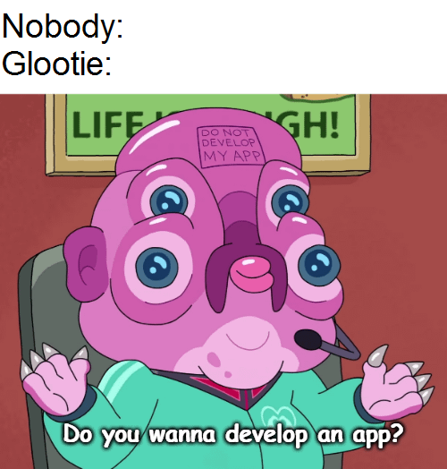

ICS 342 - Week 13 - Lightning Exploration
iOS
Native Swift + SwiftUI
Presented by
Nathan Perfetti & Dustin Marsh
Part 1 - Demo
Todo List, running
- add, toggle, swipe, filter
- drag reorder in edit mode
- detail screen, rename, delete
- persists across relaunch

Part 2 - Standard Questions
Surprisingly easy?
- Whole app is ~300 lines. Compose knowledge transferred, just renamed.
- Dark mode, animations, and gestures were free.
- Xcode previews render with fake data, the FakeMediaRepository trick.
Part 2 - Standard Questions
Surprisingly hard?
- The hard parts were tooling, never Swift.
- Xcode defaults to a run target that needs a paid signing team. The simulator needs nothing.
- The project file (project.pbxproj) is machine generated. A merge conflict there is misery.
D1000000000000000000000E /* Debug */ = {
isa = XCBuildConfiguration;
buildSettings = {
SDKROOT = iphoneos;
...
// 321 lines of this. generated. good luck
Part 2 - Standard Questions
Would we actually build with this?
- For an iPhone-first product, yes. The pain is all in week one.
- Nothing we wrote runs on Android. The frameworks look alike but share zero code.
- Two platforms means two codebases. A budget question, not a preference.
// SwiftUI
List(todos) { TodoRow(item: $0) }
// Compose
LazyColumn { items(todos) { TodoRow(it) } }
// same idea. zero shared lines
Part 3 - Platform Q&A - 1 of 4
How closely did @State/@Binding map onto Compose's state-hoisting model? Where did the mental model diverge?
@State is basically remember { mutableStateOf(...) }: a variable that updates the UI when it changes.@Binding binds to someone else's @State. Think of it as a pointer to the original.- The divergence: Compose children get callbacks like
onValueChange. Swift children just get a @Binding.
Part 3 - Platform Q&A - 2 of 4
SwiftUI only targets Apple platforms. What did you gain or give up by being tied to one vendor's tooling?
| Pros | Cons |
|---|
| Smooth developer experience | Locked to Apple |
| Ecosystem is seamless | Must develop on a Mac |
| Looks great with minimal effort | Cost |
Part 3 - Platform Q&A - 3 of 4
How did the Xcode Previews iteration loop compare to Compose Previews?
| Xcode Previews | Android Studio Previews |
|---|
| Work out of the box | @Preview allows more customization |
| Can interact with buttons and other UI | Multiple @Preview functions per file |
| Runs smoother | @Preview is easy to use |
Part 3 - Platform Q&A - 4 of 4
If you had to ship the same app on Android and iOS, what would you actually share vs. rebuild from scratch?
- Share most of the backend: Kotlin for the API, validation, and other logic.
- Rebuild the UI per platform in SwiftUI and Compose so it looks right on both.
- Separate UIs let each app use unique platform features.